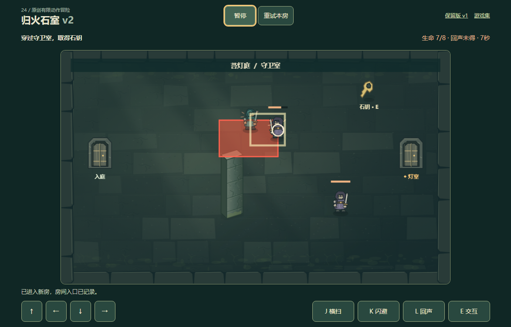
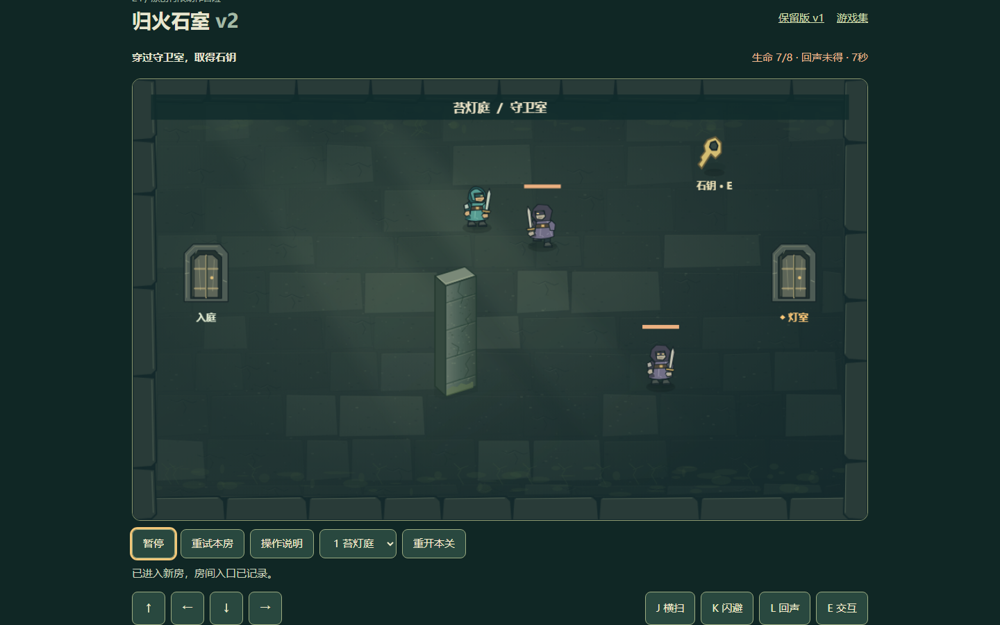
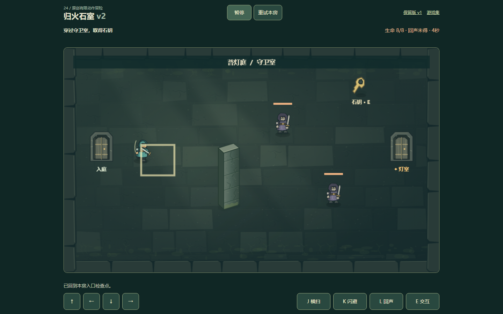
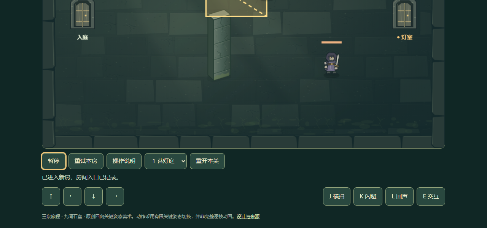
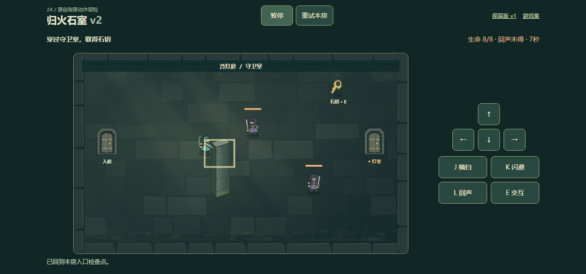
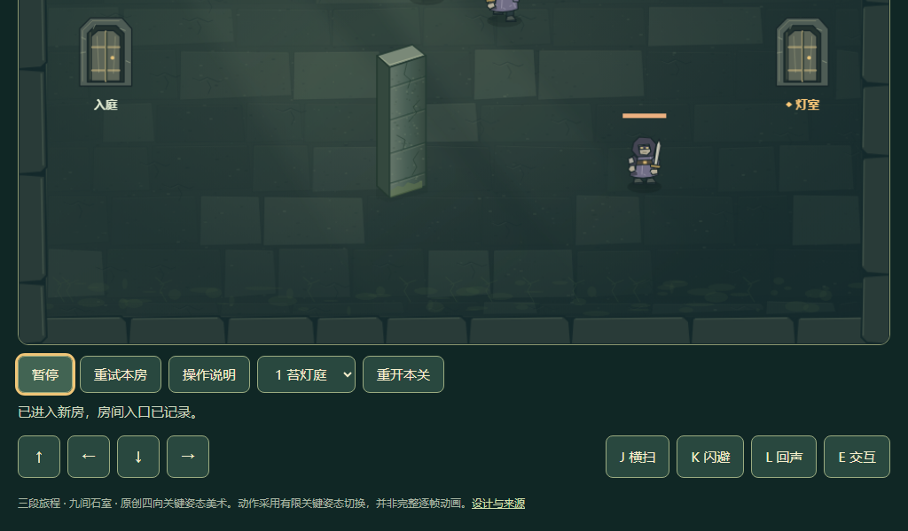
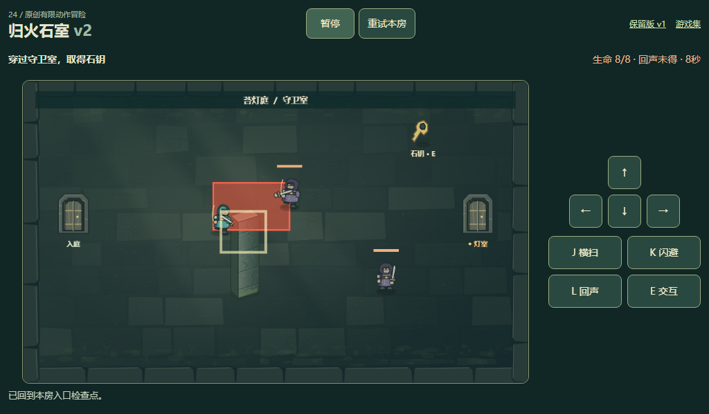

仅HTML/CSS同屏布局修复，不改玩法、存档、三关或素材。不作整体品质升级声明。以下是未经裁切的实际浏览器原尺寸图，正常页面进入守卫室后短移动/攻击；图片属于自动化操作记录，不是真人、手机或通关验收。前后为独立操作片段，不声称逐帧相同战局。
两运行文件补丁 · 含浏览器脚本与说明的源码补丁 · 完整说明 · 保留核对与迷宫材料哈希 · 五窗口验证







测试器修正了截图后观察短攻击冷却的时机，以及v1画布ID差异。原始记录仍保留：首轮观察 · 五窗口完成、旧版选择器超时 · 旧版入口单独复验。不把分阶段验证冒充一次无失败执行。